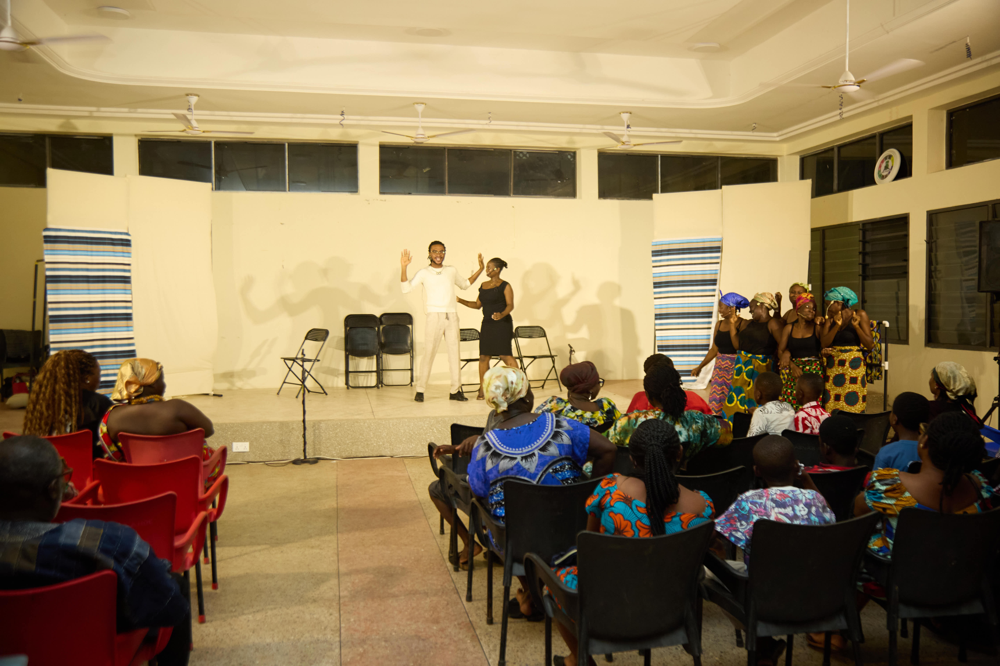
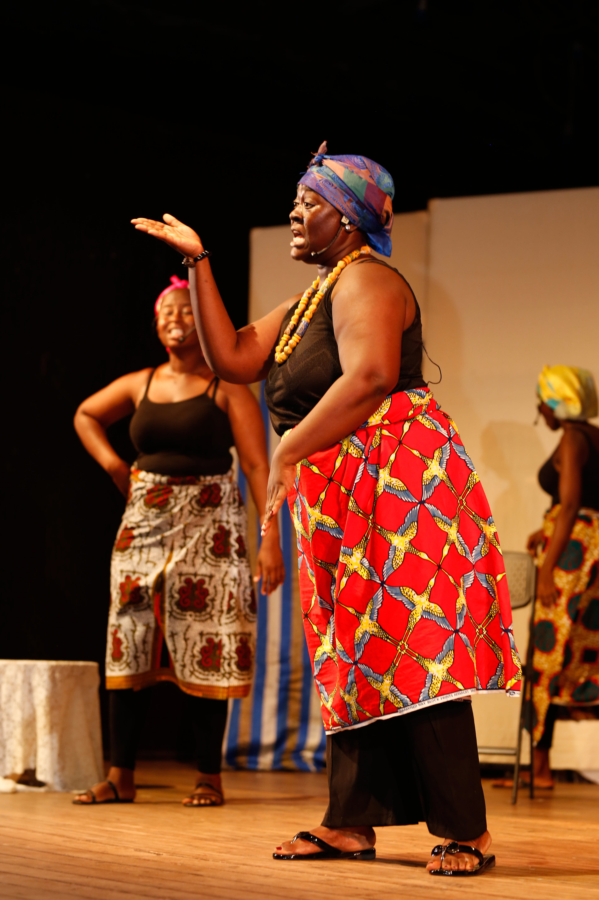
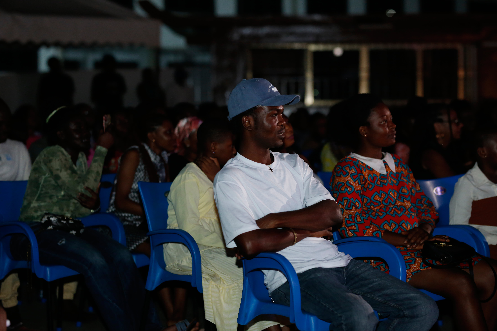
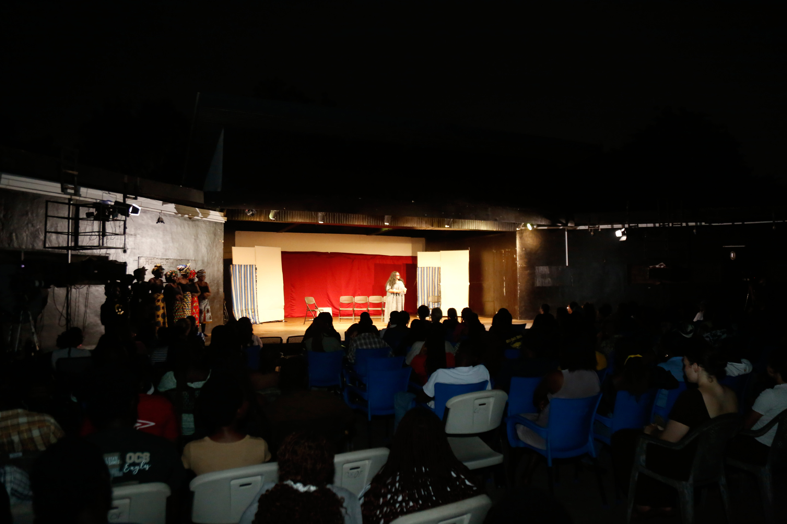
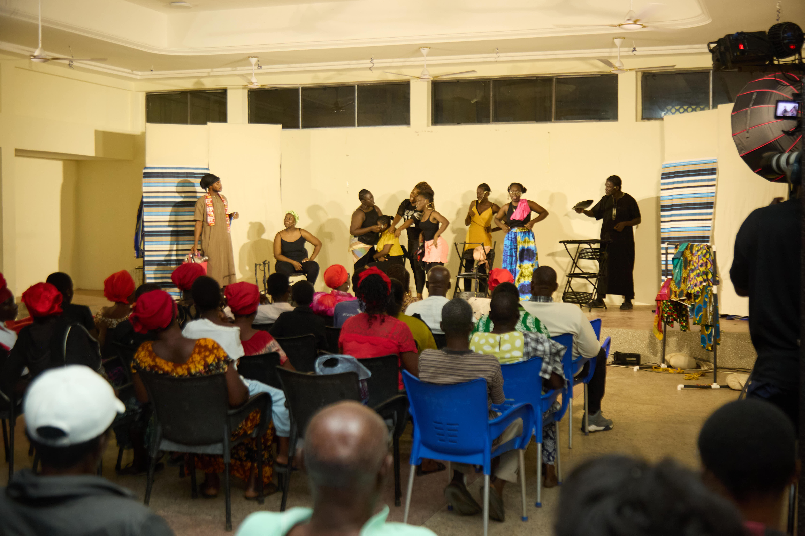
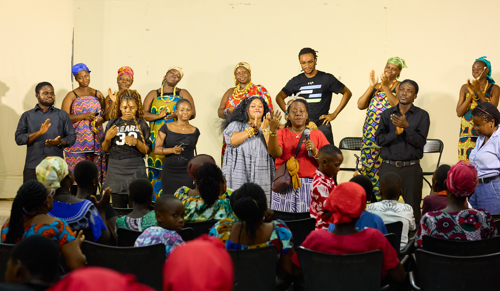
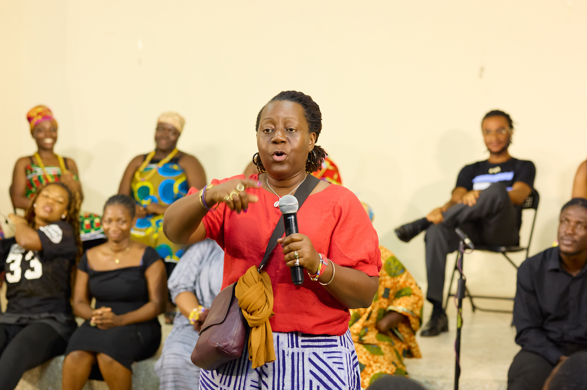
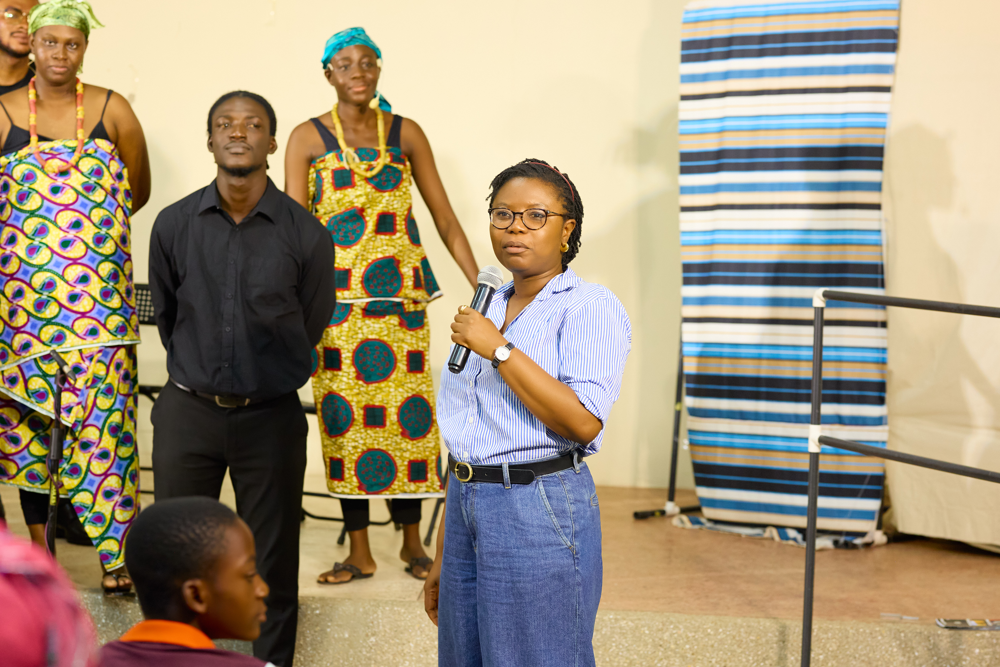
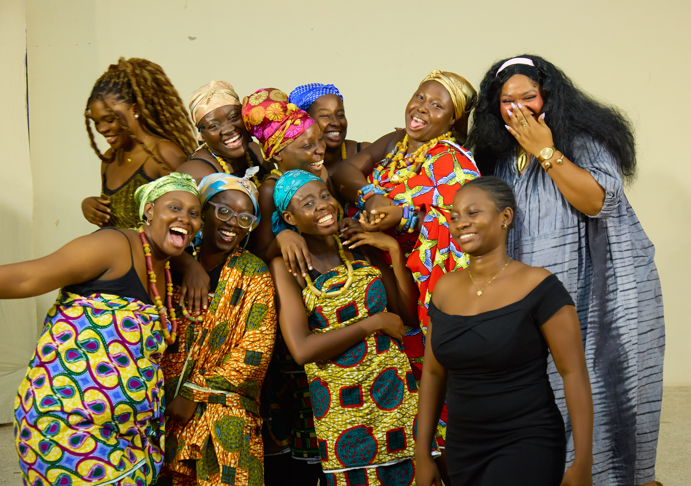
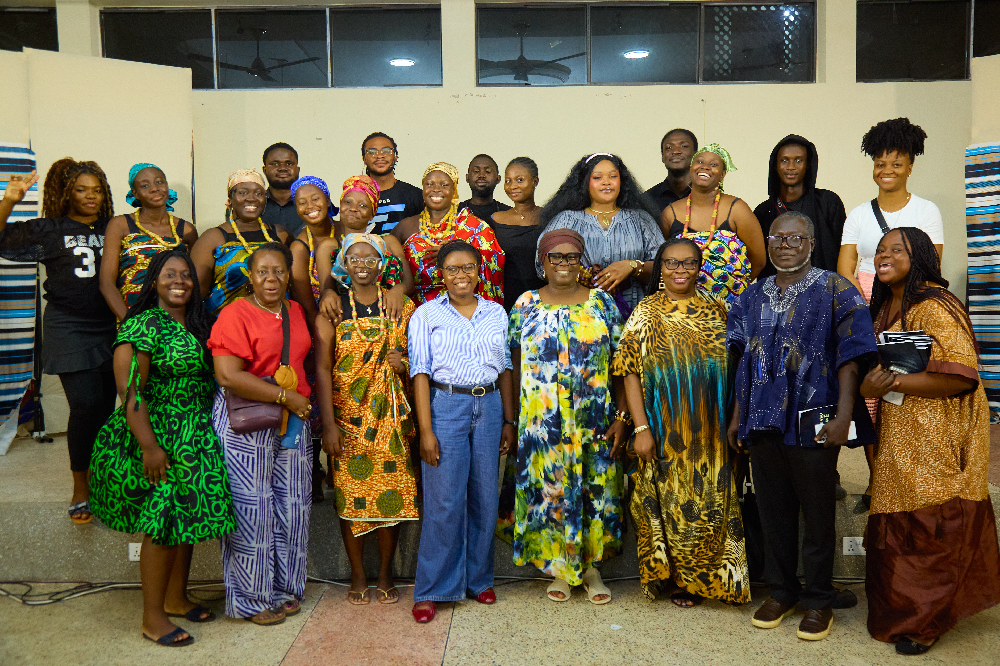

You See
Me
Creative
Works
Theatre and illustrated stories made with migrant communities in Ghana.

Migration is a significant risk factor to experiencing gender-based violence (GBV) and women who migrate without their relatives often lack help to prevent the problem. This project is on the prevention of and responses to GBV within migrant communities in Ghana.
Applied theatre
Scenes are built with performers and community members rather than written for them, so what happens on stage is recognisable to the people watching it.
Each performance ends in conversation: what help exists here, who to ask, and what usually gets in the way.
Illustrated stories
Short comics follow a survivor through the steps of getting help, drawn so they can be read and passed on without much text.
They are made to be used – in clinics, markets and community meetings – not to sit in a report.
Queenmothers and neighbours
Female traditional leaders are often the first people a woman turns to, so the programme works with queenmothers on what they can do and where they can refer someone on.
The same material is shared with host communities, because a survivor’s neighbours decide a great deal about what happens next.
Creative Works
Community Theatre Production
When You See Me
A community-led applied theatre production exploring the responses to gender-based violence within migrant communities. Built closely with community members, the scenes provide a relatable, engaging platform for host and migrant communities alike to discuss barriers to justice and avenues for accessing help.
Production Gallery









